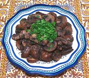

|
Sautéd Mushrooms with AllspiceTurkey | ||||
| Serves: Effort: Sched: DoAhead: |
4 app ** 35 min Yes |
An unusual but quite enjoyable meze (appetizer) or side dish that is easy to make. It can be served warm or at room temperature, and can be made ahead. | |||
|
|
1 1 1/2 1 2 3 1/2 2/3 ------ ar |
# oz T T T T t t --- |
Mushrooms (1) Shallots Allspice Berries Lemon Juice Parsley Butter Pepper, black Salt -- Garnish Parsley (more) |
We list this recipe as vegetarian, but mushrooms are more closely related to animals than to vegetables - we have a common ancestor. See also Comments. PREP - (20 min)
|